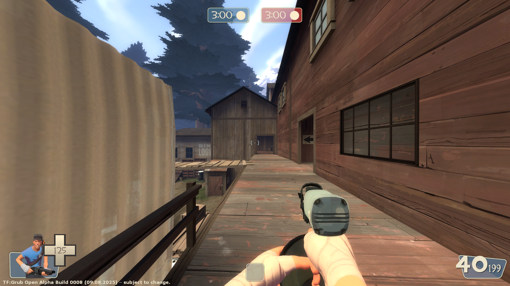
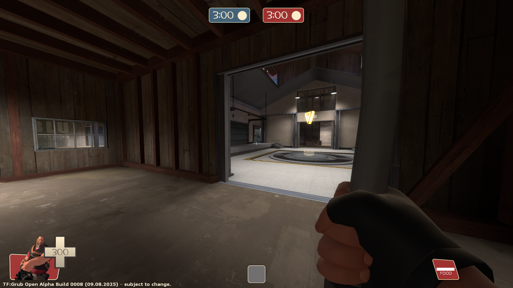
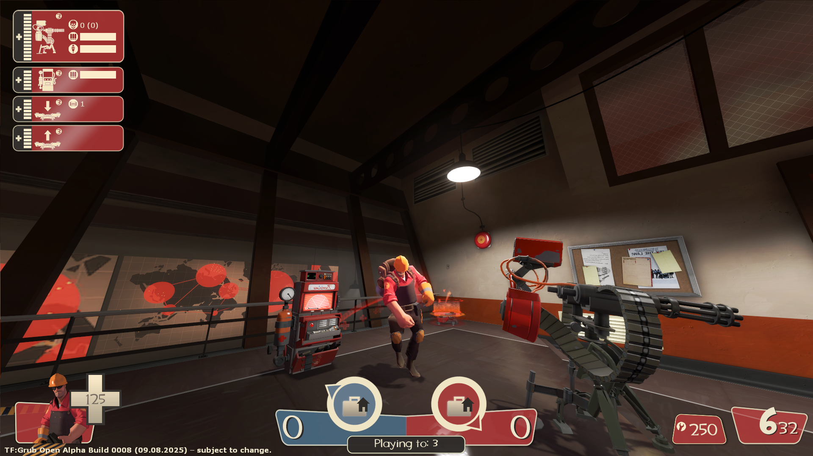

Hello, Grub here, I guess this is a page for my TF2 Sourcemod.
It's Based on the TF2 Pyro Update page from valve, trust me, I'm not an HTML god, just though having some page like this could be cool.
It's Based on the TF2 Pyro Update page from valve, trust me, I'm not an HTML god, just though having some page like this could be cool.

Grub Fortress
Welcome to the website for my TF2 Sourcemod
Links
New Weapons
Nailgun (Scout secondary)
- A great tool that should be in every handy-mans toolbox. not sure if it should be used as a weapon
RPG (Soldier primary)
- Rockets travel in an arc
- 20% damage bonus
- -50% clip size
Leadpipe (Heavy melee)
- +50% damage bonus
- 20% slower firing speed
- No random critical hits
The Pipebomb Launcher (Demoman secondary)
- Shoots out detonatable pipebombs
- Grenades have very little bounce and roll
- Alt-Fire: Detonate all stickybombs
The Under Pressure (Medic primary)
- +50% faster firing speed
- 35% faster reload time
- This weapon deploys 35% faster
- -15% damage penalty
- -75% clip size
The Perforator (Heavy primary)
- +100% damage bonus
- +33% faster firing speed
- +50% max primary ammo on wearer
- Shoots nail projectiles
The Big Owen (Heavy primary)
- 50% faster spin up time
- 100% more accurate
- Silent Killer: No barrel spin sound
- -15% damage penalty
- 150% slower firing speed
- -75% max primary ammo on wearer
- -50% damage penalty vs buildings
Metal Backpack (Engineer secondary)
- +25% max metal on wearer
Der Erwecker (Medic Melee)
- This weapon deploys 50% faster
- Heal 50% health to teammates on hit
- On Hit: One target at a time is Marker-For-Death, causing all damage taken to be mini-crits
- -75% damage penalty
The Quickplay (Spy Watch)
- Cloak Type: Speed Boost.
- When cloaked, the player gains a speed boost.
- +50% faster decloak speed
- -25% cloak duration
- No cloak meter from ammo boxes when invisible
- No damage reduction while cloaked
Maps
KOTH Landfall
KOTH Lumberyard
CTF Warehouse
Screenshots



Weapon Rebalances
All Sniper Rifles
- Instead of projecting a laser dot, the sniper rifle will now emit a continuous laser beam from the sniper to the point they are aiming at.
The Crusader's Crossbow
- 50% slower reload time
The Family Business
- This weapon can now be equipped by Engineer, Heavy, Soldier and Pyro
The B.A.S.E. Jumper
- Weapon can now be re-deployed an infinite amount of times
The Ambassador
- Weapon will always deal the same amount of headshot damage regardless of range
The Axtinguisher
- 100% critical hit vs burning players
- -33% damage penalty
- No random critical hits
- This weapon holsters 35% slower
Baby Face's Blaster
- On Hit: Gain a speed boost
- -34% clip size
- 10% slower move speed on wearer
The Scottish Handshake
- When weapon is active:
- Move speed increases as the user becomes injured
- You are Marked-For-Death while active, and for short period after switching weapons
- -90% less healing from Medic sources
The Sandman
- Alt-Fire: Launches a ball that slows opponents, and stuns opponents at long range
The Gunboats
- Weapon can now be equipped on Soldier and Demoman
The Übersaw
- On Kill: 25% ÜberCharge added
- 50% slower firing speed
- No random critical hits
The Buff Banner
- +40% max primary ammo on wearer
The Back Scatter
- "20% more accurate" instead of "20% less accurate"
The Brass Beast
- "+20% damage resistance when spun up" instead of "+20% damage resistance when below 50% health and spun up"
The Diamondback
- Gives a guaranteed critical hit for each backstab kill
The Buffalo Steak Sandvich
- Removed the +20% damage vulnerability while active
Conniver's Kunai
- +15 max health on wearer
- On Backstab: steal 100% of your victim's health, does not overheal
- Wearer cannot disguise
- No damage reduction while cloaked
Your Eternal Reward
- Upon a successful backstab against a human target, you rapidly disguise as your victim
- Silent Killer: No attack noise from backstabs
- +33% cloak drain rate
- Normal disguises require a full cloak meter
Jarate
- 30 second recharge time (instead of 20)
- The duration of the effect has been decreased to 5 seconds (from 10)
Mad Milk
- 30 second recharge time (instead of 20)
- The duration of the effect has been decreased to 5 seconds (from 10)
The Bazaar Bargain
- -10% damage penalty
- 25% slower firing speed
- Base charge rate decreased by 50%
- Each scoped headshot kill increases the weapon's charge rate by 25% up to 200%
The Force-A-Nature
- 15% faster reload time
The Soda Popper
- 15% faster reload time (instead of 25%)
Natascha
- +50 health restored on kill
- 20% more accurate
- +15% faster firing speed
- -50% less healing from Medic sources
- -35% damage penalty vs buildings
- -25% damage penalty
- 30% slower spin up time
The Tribalman's Shiv
- On Hit: Bleed for 3 seconds
- This weapon deploys 25% faster
- On Hit: Gain a speed boost
- -50% damage penalty
The Enforcer
- +20% faster firing speed
- This weapon holsters 25% faster
- This weapon deploys 50% faster
- -25% damage penalty
- -20% clip size
- -50% max secondary ammo on wearer
The Homewrecker
- +150% damage vs buildings
- -50% reduction in push force taken from damage
- -25% damage vs players
The Fists of Steel
- +20% explosive damage resistance when active
- +40% bullet damage resistance when active
- -40% maximum overheal when active
- -40% health from healers when active
- +100% damage from melee sources while active
- This weapon holsters 100% slower
The Razorback
- Blocks a single backstab attempt
- -25 max health on wearer
The Cleaner's Carbine
- This weapon is now 33% more accurate
The Winger
- This weapon can now be equipped by The Engineer
Pretty Boy's Pocket Pistol
- This weapon can now be equipped by The Engineer
Sydney Sleeper
- On Scoped Hit: Apply Jarate for 2 to 7 seconds based on charge level. (from 2 to 5 seconds)
- -10% damage on body shot
Darwin's Danger Shield
- +25% max health on wearer
QnA
Q: Why did you make the mod?
A: No reason at all to be honest, just made it for fun
Q: Why is the mod full of unoriginal ideas
A: idk, just though these ideas would be cool, like i said, I'm just makin a sourcemod for fun
Q: Did you get permission to use the assets from [X] creator
A: Yeah, whenever I add in stuff, I make sure to ask the original creator if they are fine with their stuff being included in a sourcemod, most of the time either on their gb profile page, of the page for the mod itself
uhh, i guess i might add more questions later
Credits
- Grub Fortress
-
Grub – Lead TF:Grub Dev
https://www.youtube.com/@GrubTheBadMapper -
Sargeant Death - The Balance Journalist
https://steamcommunity.com/profiles/76561199026136810 -
Mr Malos - Modeler, Mapper, Playtester
https://steamcommunity.com/profiles/76561199026136810 -
cheesie_cake - Playtester
https://steamcommunity.com/profiles/76561199026136810 - Weapon Models
-
The Under Pressure – Haau, Dim
https://gamebanana.com/mods/529270 -
The Perforator – Haau, kibbleknight
https://gamebanana.com/mods/516732 -
The Big Owen – Haau, kibbleknight
https://gamebanana.com/mods/603188 -
The Pipebomb Launcher – Haau, Extra Ram
https://gamebanana.com/mods/603188 -
Der Erwecker – Haau, Tabby
https://gamebanana.com/mods/543039 - Community Help/Contributions
- BetaM – Custom Items, Credits menu, misc. fixes
https://www.youtube.com/BetaM - Custom Fortress – The mod Grub Fortress is a fork of
https://github.com/ALIEN31ITA/Better-Fortress-2 - Ultimate Visual Fix Pack - agrastiOs, Nonhuman, Nonhuman, Whurr, PieSavvy, JarateKing, FlaminSarge
https://github.com/agrastiOs/Ultimate-TF2-Visual-Fix-Pack - Toru the Red Fox – Old TF2 Main menu
https://github.com/TorutheRedFox/source-sdk-2013 - Solo Fortress 2, Kepler – Item schema delete attribute support
https://moddb.com/mods/solo-fortress-2 - Hactica – Ultimate Weapon Animation Fixes
https://gamebanana.com/wips/86367 - NvC-DmN-CH - HL2 Mirrored code
https://github.com/NvC-DmN-CH/Half-Life-2-Mirrored - wgetJane - Fix sniper laser dot position being calculated inaccurately
https://github.com/ValveSoftware/source-sdk-2013/pull/637
Grub Fortress not affiliated with Valve Software or any of their other franchises,
Grub Fortress is an Community made project made by a few people
All original Team Fortress 2 content © Valve Software, Inc. All rights reserved.
Grub Fortress is an Community made project made by a few people
All original Team Fortress 2 content © Valve Software, Inc. All rights reserved.